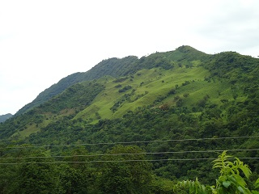
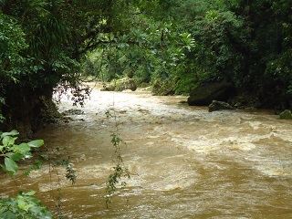
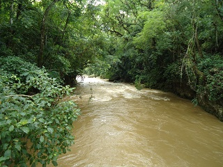
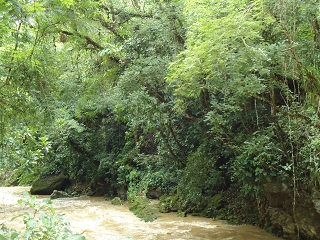
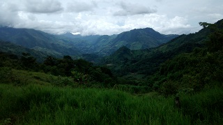

Conjunto de rancherías que se encuentra en el municipio de pueblo nuevo Solistahuacan. Su atractivo principal es el rio paraíso que atraviesa el lugar, con una profundidad de hasta 3 metros.
El rio tiene dos puntos de convivencia: uno denominado 'la hamaca' debido a que ahí se encuentra un puente de hamaca, que comunica las orillas del rio; el otro denominado 'el paso', debido a que en este lugar hay un camino bastante amplio y despejado para realizar actividades de natación.
Se puede observar en el lugar vegetación de diferentes climas, que se han adaptado al lugar, además de fauna de la región.
Se encuentra en la ranchería concepción, perteneciente a pueblo nuevo Solistahuacan, a 40 km de la cabecera municipal.
Para llegar es recomendable utilizar vehículos 4x4 ya que se atraviesan por caminos de terrajera con irregularidad, piedras sueltas, baches, etc.
Se dirige al barrio san Lorenzo y continuar por la calle principal, en donde comienza un tramo estatal, con dirección a sonora, continuar el camino, pasando por el sauce, Benito Juárez, la palma, Emiliano zapata, aproximadamente son 40 km al lugar, pero en tiempo puede tomar hasta 3 hrs de camino.
En el lugar usted puede practicar actividades como:





posicione el mouse o de click sobre las imágenes
{kind=link}
{kind=link}
{kind=link}
{kind=link}
{kind=link}